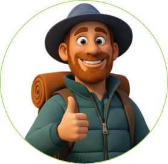

Экспедиция команды
Ты проделал огромную работуи достиг самой вершины!
Установи флаг, забери результаты своего пути
и открой все артефакты команды.


Вершина ждёт свой флаг.

Экспедиция команды
Установи флаг, забери результаты своего пути
и открой все артефакты команды.
Вершина ждёт свой флаг.